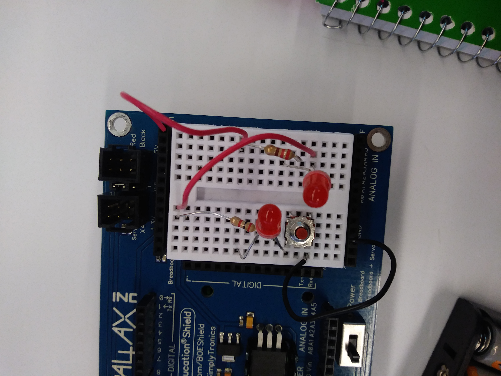

I do not know any similarites Python and Scratch have because I was not here for Scratch.
Today was fun. I enjoyed drawing shapes on python. I was hard because I did not know where to start but plugging
in random code help me understand. However, I still need a lot of practice.
I think I worked better in the group that many people didn't know alot like me because I didn't feel lost.
When other people dont understand forces me to learn so I actually ask for help. if that makes sense..
However, having some who knows what they are doing also helps because I learned new things I didn't know... so either
so either way it was good.
My idea of robot changed because I realize Robots can also be operated by humans, as long as they preform their purpose.
I am exicted for the future because engineers have the ability to invent many things to improve the world. However, I am scared at
at the same time of the outcome and if an invention will have a negative effect.
Things that worked well was that I didn't control the work because I already done something similar to this. I will also contibute
but at the same time let my group figure it out.

what we did was a series circuit which means if one of the LEDs was taken out the other LED wouldn't work. In our circuit we
used a button and this button acted like a door, when the button was pressed the LEDs were turn on but when it was not pressed
they remained off.
The internet is a network of servers and devices that allows users to access a website.
I think that LaTex is a programming language because it uses documents and html uses document.
I mean I don't know but im guessing
I didn't learn nothing new about circuits...
My favorite part of the Robot dance it seeing my baby working. It was so cute with the lights. My team worked
hard on the code, so seeing it work properly was a relief.
Manuela Veloso and Ayanna need the servo output. They need this because they are working on making robots move.
I learned how to use a infrared light with the ardunino robot. We used else if to use the light; when it saw the light
(0) it would react. If it didnt see nothing (1) it would continue forward. Our group worked well we were able to solve
the problems that we faced by brainstorming ideas.